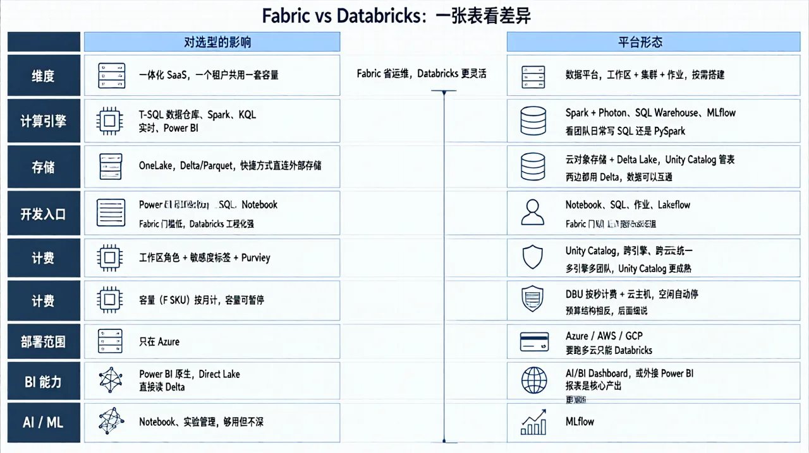
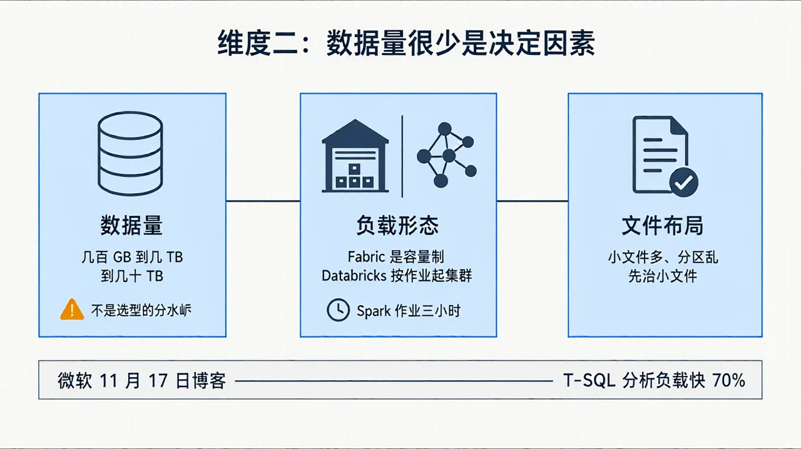
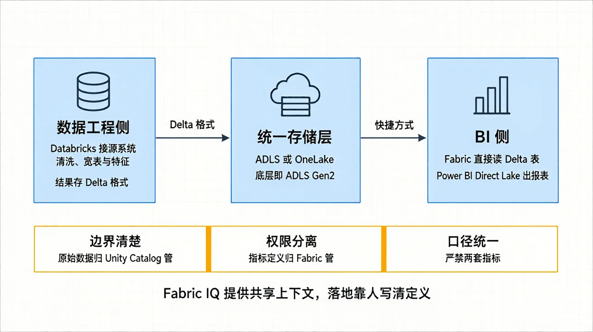
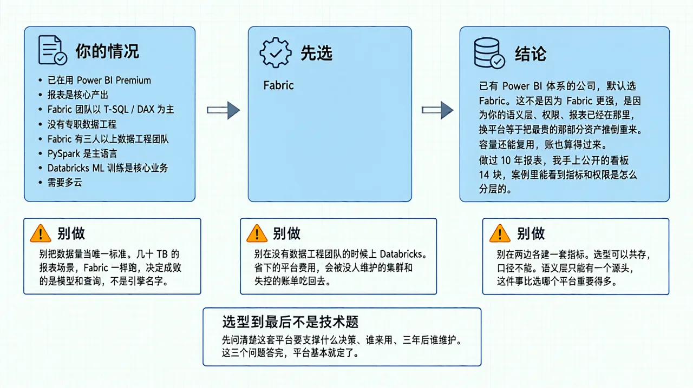

Fabric 和 Databricks 怎么选？四个维度，一张表
Fabric 和 Databricks 不是二选一。按技能栈、数据量、团队、预算四个维度判断，一张表给结论。

先说结论：Fabric 和 Databricks 不是二选一。
搜「Fabric vs Databricks」的人，真正要回答的只有一个问题：我现在的团队、数据、预算，先上哪一个。这个问题没有通用答案，但有判断线。判断线不在数据量上，在团队会写什么、报表是不是核心产出、有没有人维护平台。
这篇按四个维度拆：技能栈、数据量、团队规模、预算结构。先给一张表，再逐条讲判断线和反例。两边都不吹。
Fabric vs Databricks：一张表看差异
| 维度 | Microsoft Fabric | Databricks | 对选型的影响 |
|---|---|---|---|
| 平台形态 | 一体化 SaaS，一个租户共用一套容量 | 数据平台，工作区 + 集群 + 作业，按需搭建 | Fabric 省运维，Databricks 更灵活 |
| 计算引擎 | T-SQL 数据仓库、Spark、KQL 实时、Power BI | Spark + Photon、SQL Warehouse、MLflow | 看团队日常写 SQL 还是 PySpark |
| 存储 | OneLake，Delta/Parquet，快捷方式直连外部存储 | 云对象存储 + Delta Lake，Unity Catalog 管表 | 两边都用 Delta，数据可以互通 |
| 开发入口 | Power BI Desktop、SQL、Notebook | Notebook、SQL、作业、Lakeflow | Fabric 门槛低，Databricks 工程化强 |
| 治理 | 工作区角色 + 敏感度标签 + Purview | Unity Catalog，跨引擎、跨云统一 | 多引擎多团队，Unity Catalog 更成熟 |
| 计费 | 容量（F SKU）按月计，容量可暂停 | DBU 按秒计费 + 云主机，空闲自动停 | 预算结构相反，后面细说 |
| 部署范围 | 只在 Azure | Azure / AWS / GCP | 要跑多云只能 Databricks |
| BI 能力 | Power BI 原生，Direct Lake 直接读 Delta | AI/BI Dashboard，或外接 Power BI | 报表是核心产出，Fabric 更顺 |
| AI / ML | Notebook、实验管理，够用但不深 | MLflow、模型服务、GPU 集群 | 训练是主业，Databricks 更合适 |
九行里，真正决定选型的是计算引擎和计费这两行。其余几行都是结果，不是原因。

维度一：技能栈是最硬的一条约束
选平台，本质上是选团队未来三年每天用什么工具干活。
Fabric 的主语言是 T-SQL 和 DAX。数据仓库就是 T-SQL 语法，报表就是 Power BI 语义模型，管道可以用图形化 Data Factory，也能写 Notebook，但不用也行。一个做报表的团队，几乎不用换技能就能上手。
Databricks 的主语言是 Python 和 Scala，Spark 是默认的思考方式。SQL 当然也能写，SQL Warehouse 就是给分析师留的入口。但平台真正的价值在工程化：作业编排、增量管道、特征工程、模型训练。只把它当 SQL 引擎用，等于买了台工程车只在市区代步。
判断线很简单：团队里能独立写 PySpark、调过数据倾斜和分区的人，有没有两个以上。有，Databricks 撑得起来；没有，选它就是在给团队加一条短期学不会的技能线。
还要分清一件事：「会写 Python」和「会调 Spark」不是一回事。前者是语法，后者是对内存、分区和 shuffle 的直觉。这个直觉只能靠项目喂出来，培训不出来。
维度二：数据量很少是决定因素
几百 GB 到几 TB，两个平台都够用；到几十 TB，两边也都能跑。数据量在大多数公司里，不是选型的分水岭。
真正拉开差距的是负载形态。
Fabric 是容量制，一个 F SKU 同时供应数据仓库、Spark、实时分析和 Power BI 查询。好处是一套账单、一个平台；代价是资源共享。一个跑三小时的 Spark 作业，可能让同一份容量里的报表查询变慢。这不是缺陷，是容量规划问题——但小团队往往没人为它做规划。
Databricks 按作业起集群，隔离是天然的。批处理跑完就停，互不影响。代价是有人要管集群、管实例类型、管成本。
具体一点：
- 单表几千万行、每天增量几 GB：Fabric 数据仓库足够，Direct Lake（直读模式，语义模型直接读 Delta 文件，不导入）连刷新都省了
- 单表几十亿行、每天增量 TB 级、要做复杂特征工程：Databricks 的 Spark 调优空间更大
- 实时流：Fabric 的 Eventstream 加 KQL 适合运营监控；Databricks 的 Structured Streaming 更适合把流并进湖仓
微软 11 月 17 日的 Fabric 博客里提到，过去一年 Fabric 数据仓库在行业标准基准测试上快了 70%。这个数字说明它在追，但追的是 T-SQL 分析负载，不是去比 Spark 的极限。
还有一个容易被忽略的点：文件布局。两边都用 Delta，但小文件多、分区设计乱，任何平台都会慢。数据量上来之后，先治小文件，再谈换平台。

维度三：团队规模决定运维成本
Fabric 是 SaaS。没有集群要起，没有版本要升，没有参数要调。两三个人的数据团队，也能同时维护仓库、管道和报表。
Databricks 不是。集群策略、实例类型、自动伸缩、作业并发、权限模型、成本告警，每一样都要有人负责。这些事做得好，平台很稳；没人做，账单会先出问题——一个忘记设自动终止的交互集群，跑一个周末的成本能顶一个月。
判断线：数据团队少于三人，核心产出是报表和看板，别碰 Databricks。不是它不好，是它需要的维护人手你还没有。
反过来，如果已经有一支数据工程团队，正在为 Spark 作业和模型训练找平台，那 Fabric 的 Spark 反而会变成束缚。能跑，但工具链、调试体验、社区方案都不在一个量级。这时候硬用 Fabric，省下的是 license 钱，赔上的是工程效率。
维度四：预算结构是两种财务模型
这一段最容易被算错。
Fabric 买的是容量，按容量档位计费。用满用不满都在花钱，好处是预算可预测，坏处是闲置也在付费。容量可以暂停，适合开发和测试环境；生产环境一般常开。
已经买了 Power BI Premium 的公司要注意：Premium 容量本身就是 Fabric 容量，原来的 P 容量可以迁到对应的 F SKU，大致上 P1 对应 F64。也就是说，这部分预算已经花出去了，Fabric 对你几乎是增量成本为零的选择。这一条经常被忽略，却往往是选型里最实际的理由。
Databricks 买的是计算量，按 DBU（Databricks 的计费单位）计费，再叠加云主机费用。空闲自动终止，间歇性批处理很便宜；7×24 常开的 SQL Warehouse 就不便宜了。账单和 workload 直接挂钩，弹性好，但需要有人盯着。
比较的时候别比单价，比 12 个月总成本：
- 报表为主、每天都有查询：Fabric 的固定容量更划算
- 每天只跑几批 ETL、白天几乎不用：Databricks 按量更省
- 两边都算上人力：Fabric 省的是运维人力，Databricks 贵的是平台人力
两者共存：最常见的架构
现实中大多数公司不是二选一。
数据工程侧用 Databricks：接源系统、清洗、做宽表和特征，结果以 Delta 格式落在 ADLS 或 OneLake。BI 侧用 Fabric：通过 OneLake（Fabric 的统一数据湖，底层就是 ADLS Gen2）的快捷方式直接读这些 Delta 表，Power BI 用 Direct Lake 出报表，不复制数据。
这个架构的关键是边界清楚：
- 原始数据和明细层归 Unity Catalog（Databricks 的统一元数据与权限层）管，谁能读、谁能改，在 Databricks 侧定义
- 指标定义和报表权限归 Fabric / Power BI 管，语义模型只有一套
- 两边都不要各建一套指标。两套口径，就是两份对不上的数字，早晚在汇报桌上打架
如果数据已经在 Databricks 里，Fabric 的 Mirroring 也能把表持续同步进 OneLake，不用自己搭管道。用不用，看你对延迟和成本的要求。
微软这两年在补的也是这一层。Ignite 上推的 Fabric IQ，讲的就是把业务定义、指标、关系做成一层共享的上下文，给人也给 agent 用。方向是对的，但落地还是要靠人把定义写清楚。

常见问题
已经有 Power BI Premium，还需要单独买 Fabric 吗？
不需要。Premium 容量就是 Fabric 容量，工作区直接能用 Fabric 的各项 workload。要留意的是同一份容量被多个 workload 共享，上 Spark 或实时分析之前，先做容量评估。
Power BI 直连 Databricks 会不会很慢？
取决于 SQL Warehouse 的规格和查询写法。大宽表、复杂 join，DirectQuery 会慢；可以改成导入模式，或者在 Fabric 里用快捷方式加 Direct Lake。serverless warehouse 还有冷启动，交互式报表要预热。
数据量到几十 TB，Fabric 撑得住吗？
存储没问题，OneLake 本来就是湖。计算看容量档位和查询形态：点查、聚合没问题，全表扫描加复杂 join 就要往上加容量。真正的瓶颈通常是建模和 SQL 写法，不是平台上限。
预算有限的小团队，先上哪个？
核心产出是报表，先上 Fabric，用试用容量验证，跑通再买最小的 F SKU。只做 ETL 和模型训练、没有报表需求，用 Databricks 按量跑，成本更可控。
我的判断
按场景直接给结论：
| 你的情况 | 先选 |
|---|---|
| 已在用 Power BI Premium，报表是核心产出 | Fabric |
| 团队以 T-SQL / DAX 为主，没有专职数据工程 | Fabric |
| 有三人以上数据工程团队，PySpark 是主语言 | Databricks |
| ML 训练是核心业务，或需要多云 | Databricks |
| 两者都有 | Databricks 做工程，Fabric 做 BI |
已经有 Power BI 体系的公司，默认选 Fabric。这不是因为 Fabric 更强，是因为你的语义层、权限、报表已经在那里，换平台等于把最贵的那部分资产推倒重来。容量还能复用，账也算得过来。做过 10 年报表，我手上公开的看板 14 块，案例里能看到指标和权限是怎么分层的。
只有三种情况，我会建议 Databricks 做主平台：第一，ML 训练和特征工程是核心业务，不是附带需求；第二，团队以 PySpark 为主，SQL 只是辅助；第三，业务要跑在多云上，或者治理要求跨引擎统一。这三条中两条，Databricks 的价值才压得住它的运维成本。
反过来，三件事别做。
别把数据量当唯一标准。几十 TB 的报表场景，Fabric 一样跑，决定成败的是模型和查询，不是引擎名字。
别在没有数据工程团队的时候上 Databricks。省下的平台费用，会被没人维护的集群和失控的账单吃回去。
别在两边各建一套指标。选型可以共存，口径不能。语义层只能有一个源头，这件事比选哪个平台重要得多。
选型到最后不是技术题。先问清楚这套平台要支撑什么决策、谁来用、三年后谁维护。这三个问题答完，平台基本就定了。这类选型和容量评估属于服务范围，把你的团队规模和数据量列出来，可以一起算一遍，联系我。
